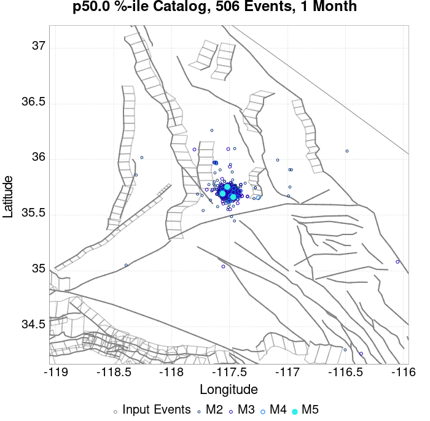
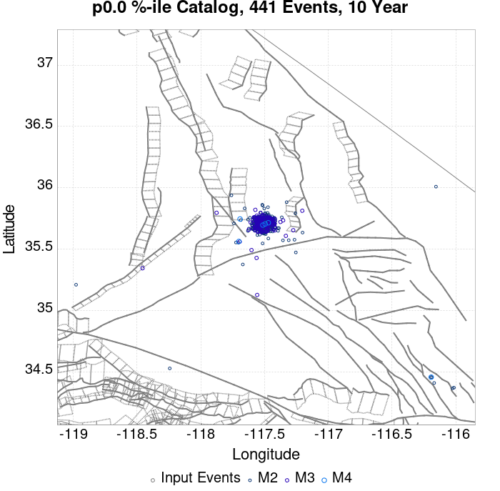
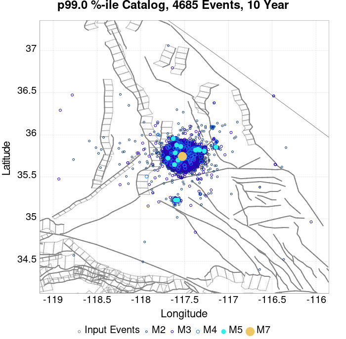
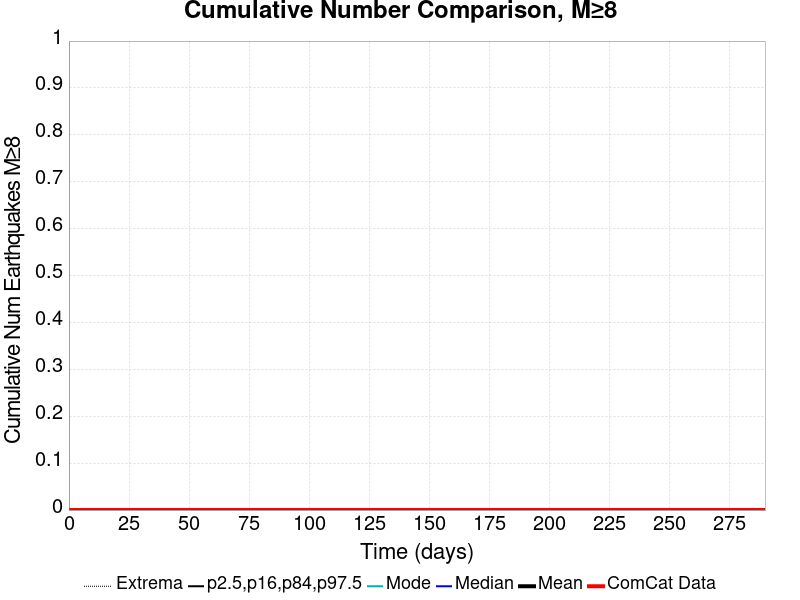
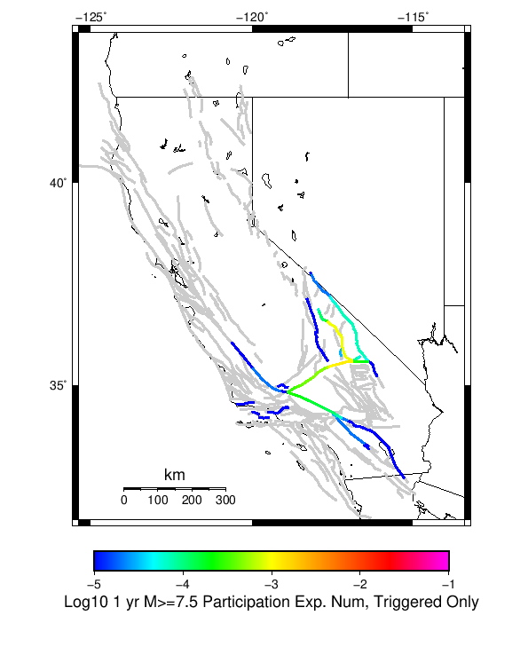

| ComCat M6.4 (ci38443183), Point Sources | |
|---|---|
| Num Simulations | 100000 |
| Start Time | 2019/07/04 17:33:50 UTC |
| Start Time Epoch Milliseconds | 1562261630000 |
| Duration | 10 Years |
| Includes Spontaneous? | false |
| Historical Ruptures | (none) |
| Config Generated With | u3etas_comcat_event_config_builder.sh --event-id ci38443183 --num-simulations 100000 --days-before 7 --hpc-site USC_HPC --nodes 36 --hours 24 --queue scec_hiprio |
| Magnitude | 1 Hour Prob | 1 Day Prob | 1 Week Prob | 1 Month Prob | 1 Year Prob | 10 Year Prob |
|---|---|---|---|---|---|---|
| M≥3 | 1.000 (100.00%) | 1.000 (100.00%) | 1.000 (100.00%) | 1.000 (100.00%) | 1.000 (100.00%) | 1.000 (100.00%) |
| M≥3.5 | 1.000 (99.99%) | 1.000 (100.00%) | 1.000 (100.00%) | 1.000 (100.00%) | 1.000 (100.00%) | 1.000 (100.00%) |
| M≥4 | 0.947 (94.69%) | 0.999 (99.91%) | 1.000 (100.00%) | 1.000 (100.00%) | 1.000 (100.00%) | 1.000 (100.00%) |
| M≥4.5 | 0.608 (60.78%) | 0.901 (90.11%) | 0.957 (95.69%) | 0.977 (97.65%) | 0.991 (99.09%) | 0.996 (99.60%) |
| M≥5 | 0.254 (25.44%) | 0.524 (52.38%) | 0.642 (64.17%) | 0.708 (70.78%) | 0.791 (79.12%) | 0.845 (84.50%) |
| M≥5.5 | 0.085 (8.50%) | 0.205 (20.54%) | 0.276 (27.56%) | 0.324 (32.40%) | 0.400 (39.96%) | 0.460 (46.05%) |
| M≥6 | 0.025 (2.47%) | 0.064 (6.44%) | 0.090 (9.02%) | 0.110 (11.00%) | 0.145 (14.50%) | 0.176 (17.64%) |
| M≥6.4 | 7.46E-3 (0.75%) | 0.019 (1.94%) | 0.028 (2.79%) | 0.035 (3.47%) | 0.048 (4.79%) | 0.060 (6.02%) |
| M≥6.5 | 5.33E-3 (0.53%) | 0.014 (1.41%) | 0.020 (2.03%) | 0.025 (2.54%) | 0.035 (3.52%) | 0.045 (4.47%) |
| M≥7 | 1.09E-3 (0.11%) | 2.79E-3 (0.28%) | 4.01E-3 (0.40%) | 5.13E-3 (0.51%) | 7.28E-3 (0.73%) | 9.59E-3 (0.96%) |
| M≥7.5 | 1.40E-4 (0.01%) | 4.90E-4 (0.05%) | 7.60E-4 (0.08%) | 1.08E-3 (0.11%) | 1.57E-3 (0.16%) | 2.27E-3 (0.23%) |
| M≥8 | 0.000 (0.00%) | 1.00E-5 (0.00%) | 1.00E-5 (0.00%) | 1.00E-5 (0.00%) | 1.00E-5 (0.00%) | 1.00E-5 (0.00%) |
Legend
| Mag | Mean | 2.5 %ile | 97.5 %ile | Median | Mode | 10 yr Probability | 10 yr Supra-Seis Prob | Primary Aftershocks Mean |
|---|---|---|---|---|---|---|---|---|
| M≥2.5 | 943.313 | 545.000 | 2682.000 | 722.000 | 641.000 | 1.000 (100.00%) | 0.052 (5.25%) | 419.142 |
| M≥2.6 | 749.304 | 429.000 | 2132.000 | 574.000 | 516.000 | 1.000 (100.00%) | 0.052 (5.25%) | 332.949 |
| M≥2.7 | 595.134 | 338.000 | 1691.000 | 456.000 | 387.000 | 1.000 (100.00%) | 0.052 (5.25%) | 264.456 |
| M≥2.8 | 472.739 | 265.000 | 1347.000 | 363.000 | 316.000 | 1.000 (100.00%) | 0.052 (5.25%) | 210.061 |
| M≥2.9 | 375.512 | 208.000 | 1072.000 | 289.000 | 260.000 | 1.000 (100.00%) | 0.052 (5.25%) | 166.840 |
| M≥3 | 298.269 | 163.000 | 854.000 | 230.000 | 205.000 | 1.000 (100.00%) | 0.052 (5.25%) | 132.499 |
| M≥3.1 | 236.969 | 127.000 | 677.000 | 183.000 | 164.000 | 1.000 (100.00%) | 0.052 (5.25%) | 105.278 |
| M≥3.2 | 188.208 | 99.000 | 539.000 | 145.000 | 125.000 | 1.000 (100.00%) | 0.052 (5.25%) | 83.606 |
| M≥3.3 | 149.500 | 77.000 | 428.000 | 116.000 | 103.000 | 1.000 (100.00%) | 0.052 (5.25%) | 66.407 |
| M≥3.4 | 118.743 | 59.000 | 341.000 | 92.000 | 78.000 | 1.000 (100.00%) | 0.052 (5.25%) | 52.736 |
| M≥3.5 | 94.326 | 45.000 | 272.000 | 73.000 | 62.000 | 1.000 (100.00%) | 0.052 (5.25%) | 41.873 |
| M≥3.6 | 74.911 | 35.000 | 216.000 | 58.000 | 52.000 | 1.000 (100.00%) | 0.052 (5.25%) | 33.254 |
| M≥3.7 | 59.494 | 26.000 | 173.000 | 46.000 | 40.000 | 1.000 (100.00%) | 0.052 (5.25%) | 26.409 |
| M≥3.8 | 47.245 | 20.000 | 138.000 | 37.000 | 31.000 | 1.000 (100.00%) | 0.052 (5.25%) | 20.977 |
| M≥3.9 | 37.498 | 15.000 | 110.000 | 29.000 | 25.000 | 1.000 (100.00%) | 0.052 (5.25%) | 16.647 |
| M≥4 | 29.777 | 11.000 | 88.000 | 23.000 | 20.000 | 1.000 (100.00%) | 0.052 (5.25%) | 13.217 |
| M≥4.1 | 23.638 | 8.000 | 71.000 | 18.000 | 15.000 | 1.000 (100.00%) | 0.052 (5.25%) | 10.494 |
| M≥4.2 | 18.770 | 6.000 | 57.000 | 15.000 | 12.000 | 1.000 (99.99%) | 0.052 (5.25%) | 8.329 |
| M≥4.3 | 14.901 | 4.000 | 46.000 | 12.000 | 10.000 | 1.000 (99.98%) | 0.052 (5.25%) | 6.614 |
| M≥4.4 | 11.817 | 3.000 | 37.000 | 9.000 | 7.000 | 0.999 (99.89%) | 0.052 (5.25%) | 5.248 |
| M≥4.5 | 9.375 | 2.000 | 30.000 | 7.000 | 6.000 | 0.996 (99.60%) | 0.052 (5.25%) | 4.162 |
| M≥4.6 | 7.440 | 1.000 | 24.000 | 6.000 | 4.000 | 0.988 (98.82%) | 0.052 (5.25%) | 3.302 |
| M≥4.7 | 5.903 | 0.000 | 20.000 | 4.000 | 3.000 | 0.972 (97.18%) | 0.052 (5.25%) | 2.616 |
| M≥4.8 | 4.683 | 0.000 | 16.000 | 3.000 | 2.000 | 0.943 (94.34%) | 0.052 (5.25%) | 2.074 |
| M≥4.9 | 3.709 | 0.000 | 14.000 | 3.000 | 2.000 | 0.901 (90.09%) | 0.052 (5.25%) | 1.641 |
| M≥5 | 2.931 | 0.000 | 11.000 | 2.000 | 1.000 | 0.845 (84.50%) | 0.052 (5.25%) | 1.295 |
| M≥5.1 | 2.316 | 0.000 | 9.000 | 2.000 | 1.000 | 0.776 (77.58%) | 0.052 (5.25%) | 1.022 |
| M≥5.2 | 1.828 | 0.000 | 8.000 | 1.000 | 0.000 | 0.699 (69.89%) | 0.052 (5.25%) | 0.806 |
| M≥5.3 | 1.439 | 0.000 | 7.000 | 1.000 | 0.000 | 0.617 (61.75%) | 0.052 (5.25%) | 0.633 |
| M≥5.4 | 1.134 | 0.000 | 6.000 | 1.000 | 0.000 | 0.537 (53.72%) | 0.052 (5.25%) | 0.497 |
| M≥5.5 | 0.891 | 0.000 | 5.000 | 0.000 | 0.000 | 0.460 (46.05%) | 0.052 (5.25%) | 0.389 |
| M≥5.6 | 0.697 | 0.000 | 4.000 | 0.000 | 0.000 | 0.389 (38.92%) | 0.052 (5.25%) | 0.303 |
| M≥5.7 | 0.542 | 0.000 | 3.000 | 0.000 | 0.000 | 0.324 (32.36%) | 0.052 (5.25%) | 0.234 |
| M≥5.8 | 0.420 | 0.000 | 3.000 | 0.000 | 0.000 | 0.265 (26.55%) | 0.052 (5.25%) | 0.181 |
| M≥5.9 | 0.324 | 0.000 | 2.000 | 0.000 | 0.000 | 0.215 (21.53%) | 0.052 (5.25%) | 0.138 |
| M≥6 | 0.256 | 0.000 | 2.000 | 0.000 | 0.000 | 0.176 (17.64%) | 0.052 (5.24%) | 0.107 |
| M≥6.1 | 0.184 | 0.000 | 2.000 | 0.000 | 0.000 | 0.135 (13.47%) | 0.035 (3.46%) | 0.078 |
| M≥6.2 | 0.134 | 0.000 | 1.000 | 0.000 | 0.000 | 0.103 (10.34%) | 0.029 (2.86%) | 0.058 |
| M≥6.3 | 0.099 | 0.000 | 1.000 | 0.000 | 0.000 | 0.079 (7.90%) | 0.022 (2.23%) | 0.042 |
| M≥6.4 | 0.074 | 0.000 | 1.000 | 0.000 | 0.000 | 0.060 (6.02%) | 0.018 (1.84%) | 0.031 |
| M≥6.5 | 0.053 | 0.000 | 1.000 | 0.000 | 0.000 | 0.045 (4.47%) | 0.015 (1.47%) | 0.022 |
| M≥6.6 | 0.039 | 0.000 | 1.000 | 0.000 | 0.000 | 0.034 (3.39%) | 0.012 (1.25%) | 0.016 |
| M≥6.7 | 0.028 | 0.000 | 0.000 | 0.000 | 0.000 | 0.025 (2.49%) | 9.86E-3 (0.99%) | 0.011 |
| M≥6.8 | 0.021 | 0.000 | 0.000 | 0.000 | 0.000 | 0.019 (1.87%) | 8.47E-3 (0.85%) | 8.13E-3 |
| M≥6.9 | 0.014 | 0.000 | 0.000 | 0.000 | 0.000 | 0.013 (1.32%) | 6.33E-3 (0.63%) | 5.39E-3 |
| M≥7 | 0.010 | 0.000 | 0.000 | 0.000 | 0.000 | 9.59E-3 (0.96%) | 5.29E-3 (0.53%) | 3.80E-3 |
| M≥7.1 | 7.58E-3 | 0.000 | 0.000 | 0.000 | 0.000 | 7.32E-3 (0.73%) | 4.72E-3 (0.47%) | 2.68E-3 |
| M≥7.2 | 5.60E-3 | 0.000 | 0.000 | 0.000 | 0.000 | 5.39E-3 (0.54%) | 3.91E-3 (0.39%) | 1.79E-3 |
| M≥7.3 | 3.64E-3 | 0.000 | 0.000 | 0.000 | 0.000 | 3.54E-3 (0.35%) | 2.88E-3 (0.29%) | 1.09E-3 |
| M≥7.4 | 3.02E-3 | 0.000 | 0.000 | 0.000 | 0.000 | 2.96E-3 (0.30%) | 2.68E-3 (0.27%) | 8.10E-4 |
| M≥7.5 | 2.31E-3 | 0.000 | 0.000 | 0.000 | 0.000 | 2.27E-3 (0.23%) | 2.19E-3 (0.22%) | 5.80E-4 |
| M≥7.6 | 1.11E-3 | 0.000 | 0.000 | 0.000 | 0.000 | 1.09E-3 (0.11%) | 1.06E-3 (0.11%) | 3.10E-4 |
| M≥7.7 | 3.60E-4 | 0.000 | 0.000 | 0.000 | 0.000 | 3.60E-4 (0.04%) | 3.60E-4 (0.04%) | 8.00E-5 |
| M≥7.8 | 1.90E-4 | 0.000 | 0.000 | 0.000 | 0.000 | 1.90E-4 (0.02%) | 1.90E-4 (0.02%) | 4.00E-5 |
| M≥7.9 | 7.00E-5 | 0.000 | 0.000 | 0.000 | 0.000 | 7.00E-5 (0.01%) | 7.00E-5 (0.01%) | 1.00E-5 |
| M≥8 | 1.00E-5 | 0.000 | 0.000 | 0.000 | 0.000 | 1.00E-5 (0.00%) | 1.00E-5 (0.00%) | 0.000 |
| M≥8.1 | 0.000 | 0.000 | 0.000 | 0.000 | 0.000 | 0.000 (0.00%) | 0.000 (0.00%) | 0.000 |
| M≥8.2 | 0.000 | 0.000 | 0.000 | 0.000 | 0.000 | 0.000 (0.00%) | 0.000 (0.00%) | 0.000 |
| M≥8.3 | 0.000 | 0.000 | 0.000 | 0.000 | 0.000 | 0.000 (0.00%) | 0.000 (0.00%) | 0.000 |
| M≥8.4 | 0.000 | 0.000 | 0.000 | 0.000 | 0.000 | 0.000 (0.00%) | 0.000 (0.00%) | 0.000 |
| M≥8.5 | 0.000 | 0.000 | 0.000 | 0.000 | 0.000 | 0.000 (0.00%) | 0.000 (0.00%) | 0.000 |
| M≥8.6 | 0.000 | 0.000 | 0.000 | 0.000 | 0.000 | 0.000 (0.00%) | 0.000 (0.00%) | 0.000 |
| M≥8.7 | 0.000 | 0.000 | 0.000 | 0.000 | 0.000 | 0.000 (0.00%) | 0.000 (0.00%) | 0.000 |
| M≥8.8 | 0.000 | 0.000 | 0.000 | 0.000 | 0.000 | 0.000 (0.00%) | 0.000 (0.00%) | 0.000 |
| M≥8.9 | 0.000 | 0.000 | 0.000 | 0.000 | 0.000 | 0.000 (0.00%) | 0.000 (0.00%) | 0.000 |
| M≥9 | 0.000 | 0.000 | 0.000 | 0.000 | 0.000 | 0.000 (0.00%) | 0.000 (0.00%) | 0.000 |
Legend

| Mag | Mean | 2.5 %ile | 97.5 %ile | Median | Mode | 1 yr Probability | 1 yr Supra-Seis Prob | Primary Aftershocks Mean |
|---|---|---|---|---|---|---|---|---|
| M≥2.5 | 724.175 | 455.000 | 1838.000 | 584.000 | 540.000 | 1.000 (100.00%) | 0.039 (3.93%) | 371.094 |
| M≥2.6 | 575.262 | 358.000 | 1462.000 | 464.000 | 423.000 | 1.000 (100.00%) | 0.039 (3.93%) | 294.789 |
| M≥2.7 | 456.905 | 281.000 | 1161.000 | 369.000 | 338.000 | 1.000 (100.00%) | 0.039 (3.93%) | 234.150 |
| M≥2.8 | 362.941 | 221.000 | 924.000 | 294.000 | 271.000 | 1.000 (100.00%) | 0.039 (3.93%) | 185.992 |
| M≥2.9 | 288.292 | 173.000 | 733.000 | 234.000 | 214.000 | 1.000 (100.00%) | 0.039 (3.93%) | 147.706 |
| M≥3 | 229.026 | 135.000 | 583.000 | 186.000 | 166.000 | 1.000 (100.00%) | 0.039 (3.93%) | 117.315 |
| M≥3.1 | 181.978 | 105.000 | 465.000 | 148.000 | 138.000 | 1.000 (100.00%) | 0.039 (3.93%) | 93.221 |
| M≥3.2 | 144.523 | 81.000 | 370.000 | 118.000 | 104.000 | 1.000 (100.00%) | 0.039 (3.93%) | 74.023 |
| M≥3.3 | 114.801 | 63.000 | 295.000 | 94.000 | 84.000 | 1.000 (100.00%) | 0.039 (3.93%) | 58.797 |
| M≥3.4 | 91.184 | 48.000 | 234.000 | 75.000 | 67.000 | 1.000 (100.00%) | 0.039 (3.93%) | 46.691 |
| M≥3.5 | 72.427 | 37.000 | 187.000 | 59.000 | 53.000 | 1.000 (100.00%) | 0.039 (3.93%) | 37.070 |
| M≥3.6 | 57.517 | 28.000 | 148.000 | 47.000 | 43.000 | 1.000 (100.00%) | 0.039 (3.93%) | 29.438 |
| M≥3.7 | 45.677 | 21.000 | 119.000 | 38.000 | 35.000 | 1.000 (100.00%) | 0.039 (3.93%) | 23.376 |
| M≥3.8 | 36.278 | 16.000 | 95.000 | 30.000 | 28.000 | 1.000 (100.00%) | 0.039 (3.93%) | 18.571 |
| M≥3.9 | 28.792 | 12.000 | 76.000 | 24.000 | 20.000 | 1.000 (100.00%) | 0.039 (3.93%) | 14.738 |
| M≥4 | 22.866 | 8.000 | 61.000 | 19.000 | 17.000 | 1.000 (100.00%) | 0.039 (3.93%) | 11.704 |
| M≥4.1 | 18.149 | 6.000 | 49.000 | 15.000 | 13.000 | 1.000 (100.00%) | 0.039 (3.93%) | 9.292 |
| M≥4.2 | 14.411 | 4.000 | 40.000 | 12.000 | 10.000 | 1.000 (99.99%) | 0.039 (3.93%) | 7.375 |
| M≥4.3 | 11.445 | 3.000 | 32.000 | 9.000 | 8.000 | 0.999 (99.92%) | 0.039 (3.93%) | 5.857 |
| M≥4.4 | 9.075 | 2.000 | 26.000 | 7.000 | 6.000 | 0.997 (99.70%) | 0.039 (3.93%) | 4.647 |
| M≥4.5 | 7.200 | 1.000 | 21.000 | 6.000 | 5.000 | 0.991 (99.09%) | 0.039 (3.93%) | 3.686 |
| M≥4.6 | 5.712 | 1.000 | 18.000 | 5.000 | 3.000 | 0.977 (97.72%) | 0.039 (3.93%) | 2.924 |
| M≥4.7 | 4.533 | 0.000 | 14.000 | 4.000 | 3.000 | 0.952 (95.18%) | 0.039 (3.93%) | 2.317 |
| M≥4.8 | 3.594 | 0.000 | 12.000 | 3.000 | 2.000 | 0.912 (91.25%) | 0.039 (3.93%) | 1.837 |
| M≥4.9 | 2.845 | 0.000 | 10.000 | 2.000 | 1.000 | 0.858 (85.80%) | 0.039 (3.93%) | 1.453 |
| M≥5 | 2.248 | 0.000 | 8.000 | 2.000 | 1.000 | 0.791 (79.12%) | 0.039 (3.93%) | 1.146 |
| M≥5.1 | 1.776 | 0.000 | 7.000 | 1.000 | 1.000 | 0.714 (71.44%) | 0.039 (3.93%) | 0.904 |
| M≥5.2 | 1.401 | 0.000 | 6.000 | 1.000 | 0.000 | 0.633 (63.33%) | 0.039 (3.93%) | 0.713 |
| M≥5.3 | 1.103 | 0.000 | 5.000 | 1.000 | 0.000 | 0.551 (55.10%) | 0.039 (3.93%) | 0.560 |
| M≥5.4 | 0.868 | 0.000 | 4.000 | 0.000 | 0.000 | 0.472 (47.22%) | 0.039 (3.93%) | 0.439 |
| M≥5.5 | 0.682 | 0.000 | 4.000 | 0.000 | 0.000 | 0.400 (39.96%) | 0.039 (3.93%) | 0.344 |
| M≥5.6 | 0.533 | 0.000 | 3.000 | 0.000 | 0.000 | 0.334 (33.37%) | 0.039 (3.93%) | 0.268 |
| M≥5.7 | 0.413 | 0.000 | 3.000 | 0.000 | 0.000 | 0.274 (27.38%) | 0.039 (3.93%) | 0.207 |
| M≥5.8 | 0.320 | 0.000 | 2.000 | 0.000 | 0.000 | 0.222 (22.21%) | 0.039 (3.93%) | 0.160 |
| M≥5.9 | 0.246 | 0.000 | 2.000 | 0.000 | 0.000 | 0.178 (17.84%) | 0.039 (3.93%) | 0.122 |
| M≥6 | 0.194 | 0.000 | 2.000 | 0.000 | 0.000 | 0.145 (14.50%) | 0.039 (3.93%) | 0.095 |
| M≥6.1 | 0.140 | 0.000 | 1.000 | 0.000 | 0.000 | 0.110 (10.97%) | 0.026 (2.58%) | 0.070 |
| M≥6.2 | 0.102 | 0.000 | 1.000 | 0.000 | 0.000 | 0.084 (8.35%) | 0.021 (2.12%) | 0.051 |
| M≥6.3 | 0.075 | 0.000 | 1.000 | 0.000 | 0.000 | 0.063 (6.34%) | 0.016 (1.65%) | 0.038 |
| M≥6.4 | 0.056 | 0.000 | 1.000 | 0.000 | 0.000 | 0.048 (4.79%) | 0.014 (1.36%) | 0.027 |
| M≥6.5 | 0.040 | 0.000 | 1.000 | 0.000 | 0.000 | 0.035 (3.52%) | 0.011 (1.08%) | 0.020 |
| M≥6.6 | 0.030 | 0.000 | 1.000 | 0.000 | 0.000 | 0.026 (2.65%) | 9.15E-3 (0.92%) | 0.014 |
| M≥6.7 | 0.021 | 0.000 | 0.000 | 0.000 | 0.000 | 0.019 (1.93%) | 7.14E-3 (0.71%) | 0.010 |
| M≥6.8 | 0.015 | 0.000 | 0.000 | 0.000 | 0.000 | 0.014 (1.43%) | 6.09E-3 (0.61%) | 7.19E-3 |
| M≥6.9 | 0.010 | 0.000 | 0.000 | 0.000 | 0.000 | 0.010 (1.00%) | 4.59E-3 (0.46%) | 4.82E-3 |
| M≥7 | 7.58E-3 | 0.000 | 0.000 | 0.000 | 0.000 | 7.28E-3 (0.73%) | 3.81E-3 (0.38%) | 3.46E-3 |
| M≥7.1 | 5.59E-3 | 0.000 | 0.000 | 0.000 | 0.000 | 5.41E-3 (0.54%) | 3.35E-3 (0.34%) | 2.44E-3 |
| M≥7.2 | 4.09E-3 | 0.000 | 0.000 | 0.000 | 0.000 | 3.94E-3 (0.39%) | 2.77E-3 (0.28%) | 1.64E-3 |
| M≥7.3 | 2.68E-3 | 0.000 | 0.000 | 0.000 | 0.000 | 2.60E-3 (0.26%) | 2.03E-3 (0.20%) | 9.70E-4 |
| M≥7.4 | 2.15E-3 | 0.000 | 0.000 | 0.000 | 0.000 | 2.11E-3 (0.21%) | 1.88E-3 (0.19%) | 7.10E-4 |
| M≥7.5 | 1.59E-3 | 0.000 | 0.000 | 0.000 | 0.000 | 1.57E-3 (0.16%) | 1.51E-3 (0.15%) | 5.20E-4 |
| M≥7.6 | 8.20E-4 | 0.000 | 0.000 | 0.000 | 0.000 | 8.00E-4 (0.08%) | 7.70E-4 (0.08%) | 2.70E-4 |
| M≥7.7 | 2.60E-4 | 0.000 | 0.000 | 0.000 | 0.000 | 2.60E-4 (0.03%) | 2.60E-4 (0.03%) | 8.00E-5 |
| M≥7.8 | 1.50E-4 | 0.000 | 0.000 | 0.000 | 0.000 | 1.50E-4 (0.01%) | 1.50E-4 (0.01%) | 4.00E-5 |
| M≥7.9 | 6.00E-5 | 0.000 | 0.000 | 0.000 | 0.000 | 6.00E-5 (0.01%) | 6.00E-5 (0.01%) | 1.00E-5 |
| M≥8 | 1.00E-5 | 0.000 | 0.000 | 0.000 | 0.000 | 1.00E-5 (0.00%) | 1.00E-5 (0.00%) | 0.000 |
| M≥8.1 | 0.000 | 0.000 | 0.000 | 0.000 | 0.000 | 0.000 (0.00%) | 0.000 (0.00%) | 0.000 |
| M≥8.2 | 0.000 | 0.000 | 0.000 | 0.000 | 0.000 | 0.000 (0.00%) | 0.000 (0.00%) | 0.000 |
| M≥8.3 | 0.000 | 0.000 | 0.000 | 0.000 | 0.000 | 0.000 (0.00%) | 0.000 (0.00%) | 0.000 |
| M≥8.4 | 0.000 | 0.000 | 0.000 | 0.000 | 0.000 | 0.000 (0.00%) | 0.000 (0.00%) | 0.000 |
| M≥8.5 | 0.000 | 0.000 | 0.000 | 0.000 | 0.000 | 0.000 (0.00%) | 0.000 (0.00%) | 0.000 |
| M≥8.6 | 0.000 | 0.000 | 0.000 | 0.000 | 0.000 | 0.000 (0.00%) | 0.000 (0.00%) | 0.000 |
| M≥8.7 | 0.000 | 0.000 | 0.000 | 0.000 | 0.000 | 0.000 (0.00%) | 0.000 (0.00%) | 0.000 |
| M≥8.8 | 0.000 | 0.000 | 0.000 | 0.000 | 0.000 | 0.000 (0.00%) | 0.000 (0.00%) | 0.000 |
| M≥8.9 | 0.000 | 0.000 | 0.000 | 0.000 | 0.000 | 0.000 (0.00%) | 0.000 (0.00%) | 0.000 |
| M≥9 | 0.000 | 0.000 | 0.000 | 0.000 | 0.000 | 0.000 (0.00%) | 0.000 (0.00%) | 0.000 |
Legend

| Mag | Mean | 2.5 %ile | 97.5 %ile | Median | Mode | 1 mo Probability | 1 mo Supra-Seis Prob | Primary Aftershocks Mean |
|---|---|---|---|---|---|---|---|---|
| M≥2.5 | 516.222 | 353.000 | 1123.000 | 439.000 | 419.000 | 1.000 (100.00%) | 0.027 (2.69%) | 309.410 |
| M≥2.6 | 410.076 | 277.000 | 894.000 | 350.000 | 326.000 | 1.000 (100.00%) | 0.027 (2.69%) | 245.802 |
| M≥2.7 | 325.703 | 217.000 | 711.000 | 278.000 | 265.000 | 1.000 (100.00%) | 0.027 (2.69%) | 195.248 |
| M≥2.8 | 258.737 | 170.000 | 565.000 | 221.000 | 203.000 | 1.000 (100.00%) | 0.027 (2.69%) | 155.093 |
| M≥2.9 | 205.515 | 132.000 | 451.000 | 176.000 | 168.000 | 1.000 (100.00%) | 0.027 (2.69%) | 123.166 |
| M≥3 | 163.251 | 103.000 | 358.000 | 140.000 | 128.000 | 1.000 (100.00%) | 0.027 (2.69%) | 97.817 |
| M≥3.1 | 129.715 | 80.000 | 284.000 | 112.000 | 103.000 | 1.000 (100.00%) | 0.027 (2.69%) | 77.729 |
| M≥3.2 | 103.008 | 62.000 | 227.000 | 89.000 | 83.000 | 1.000 (100.00%) | 0.027 (2.69%) | 61.718 |
| M≥3.3 | 81.811 | 47.000 | 181.000 | 71.000 | 65.000 | 1.000 (100.00%) | 0.027 (2.69%) | 49.019 |
| M≥3.4 | 64.976 | 36.000 | 145.000 | 56.000 | 51.000 | 1.000 (100.00%) | 0.027 (2.69%) | 38.923 |
| M≥3.5 | 51.604 | 28.000 | 116.000 | 45.000 | 42.000 | 1.000 (100.00%) | 0.027 (2.69%) | 30.904 |
| M≥3.6 | 40.982 | 21.000 | 93.000 | 35.000 | 33.000 | 1.000 (100.00%) | 0.027 (2.69%) | 24.545 |
| M≥3.7 | 32.551 | 16.000 | 74.000 | 28.000 | 26.000 | 1.000 (100.00%) | 0.027 (2.69%) | 19.492 |
| M≥3.8 | 25.853 | 11.000 | 60.000 | 22.000 | 21.000 | 1.000 (100.00%) | 0.027 (2.69%) | 15.482 |
| M≥3.9 | 20.514 | 8.000 | 48.000 | 18.000 | 16.000 | 1.000 (100.00%) | 0.027 (2.69%) | 12.286 |
| M≥4 | 16.288 | 6.000 | 39.000 | 14.000 | 12.000 | 1.000 (100.00%) | 0.027 (2.69%) | 9.756 |
| M≥4.1 | 12.931 | 4.000 | 31.000 | 11.000 | 10.000 | 1.000 (99.99%) | 0.027 (2.69%) | 7.746 |
| M≥4.2 | 10.268 | 3.000 | 25.000 | 9.000 | 8.000 | 0.999 (99.92%) | 0.027 (2.69%) | 6.148 |
| M≥4.3 | 8.159 | 2.000 | 21.000 | 7.000 | 6.000 | 0.997 (99.70%) | 0.027 (2.69%) | 4.883 |
| M≥4.4 | 6.473 | 1.000 | 17.000 | 5.000 | 4.000 | 0.991 (99.07%) | 0.027 (2.69%) | 3.874 |
| M≥4.5 | 5.133 | 1.000 | 14.000 | 4.000 | 3.000 | 0.977 (97.65%) | 0.027 (2.69%) | 3.072 |
| M≥4.6 | 4.073 | 0.000 | 12.000 | 3.000 | 3.000 | 0.951 (95.08%) | 0.027 (2.69%) | 2.438 |
| M≥4.7 | 3.231 | 0.000 | 10.000 | 3.000 | 2.000 | 0.909 (90.94%) | 0.027 (2.69%) | 1.932 |
| M≥4.8 | 2.563 | 0.000 | 8.000 | 2.000 | 1.000 | 0.854 (85.44%) | 0.027 (2.69%) | 1.531 |
| M≥4.9 | 2.028 | 0.000 | 7.000 | 2.000 | 1.000 | 0.785 (78.54%) | 0.027 (2.69%) | 1.211 |
| M≥5 | 1.601 | 0.000 | 6.000 | 1.000 | 1.000 | 0.708 (70.78%) | 0.027 (2.69%) | 0.954 |
| M≥5.1 | 1.264 | 0.000 | 5.000 | 1.000 | 0.000 | 0.625 (62.52%) | 0.027 (2.69%) | 0.752 |
| M≥5.2 | 0.995 | 0.000 | 4.000 | 1.000 | 0.000 | 0.542 (54.21%) | 0.027 (2.69%) | 0.592 |
| M≥5.3 | 0.783 | 0.000 | 4.000 | 0.000 | 0.000 | 0.462 (46.22%) | 0.027 (2.69%) | 0.465 |
| M≥5.4 | 0.616 | 0.000 | 3.000 | 0.000 | 0.000 | 0.389 (38.94%) | 0.027 (2.69%) | 0.365 |
| M≥5.5 | 0.483 | 0.000 | 3.000 | 0.000 | 0.000 | 0.324 (32.40%) | 0.027 (2.69%) | 0.286 |
| M≥5.6 | 0.376 | 0.000 | 2.000 | 0.000 | 0.000 | 0.266 (26.61%) | 0.027 (2.69%) | 0.223 |
| M≥5.7 | 0.292 | 0.000 | 2.000 | 0.000 | 0.000 | 0.215 (21.54%) | 0.027 (2.69%) | 0.172 |
| M≥5.8 | 0.226 | 0.000 | 2.000 | 0.000 | 0.000 | 0.173 (17.29%) | 0.027 (2.69%) | 0.133 |
| M≥5.9 | 0.174 | 0.000 | 2.000 | 0.000 | 0.000 | 0.137 (13.74%) | 0.027 (2.68%) | 0.102 |
| M≥6 | 0.136 | 0.000 | 1.000 | 0.000 | 0.000 | 0.110 (11.00%) | 0.027 (2.68%) | 0.079 |
| M≥6.1 | 0.099 | 0.000 | 1.000 | 0.000 | 0.000 | 0.083 (8.26%) | 0.017 (1.73%) | 0.058 |
| M≥6.2 | 0.072 | 0.000 | 1.000 | 0.000 | 0.000 | 0.062 (6.23%) | 0.014 (1.43%) | 0.042 |
| M≥6.3 | 0.053 | 0.000 | 1.000 | 0.000 | 0.000 | 0.047 (4.67%) | 0.011 (1.09%) | 0.031 |
| M≥6.4 | 0.039 | 0.000 | 1.000 | 0.000 | 0.000 | 0.035 (3.47%) | 9.00E-3 (0.90%) | 0.023 |
| M≥6.5 | 0.028 | 0.000 | 1.000 | 0.000 | 0.000 | 0.025 (2.54%) | 7.26E-3 (0.73%) | 0.016 |
| M≥6.6 | 0.021 | 0.000 | 0.000 | 0.000 | 0.000 | 0.019 (1.91%) | 6.14E-3 (0.61%) | 0.012 |
| M≥6.7 | 0.015 | 0.000 | 0.000 | 0.000 | 0.000 | 0.014 (1.38%) | 4.88E-3 (0.49%) | 8.35E-3 |
| M≥6.8 | 0.011 | 0.000 | 0.000 | 0.000 | 0.000 | 0.010 (1.01%) | 4.19E-3 (0.42%) | 5.90E-3 |
| M≥6.9 | 7.24E-3 | 0.000 | 0.000 | 0.000 | 0.000 | 7.00E-3 (0.70%) | 3.13E-3 (0.31%) | 4.00E-3 |
| M≥7 | 5.28E-3 | 0.000 | 0.000 | 0.000 | 0.000 | 5.13E-3 (0.51%) | 2.61E-3 (0.26%) | 2.89E-3 |
| M≥7.1 | 3.83E-3 | 0.000 | 0.000 | 0.000 | 0.000 | 3.75E-3 (0.38%) | 2.30E-3 (0.23%) | 2.03E-3 |
| M≥7.2 | 2.76E-3 | 0.000 | 0.000 | 0.000 | 0.000 | 2.70E-3 (0.27%) | 1.89E-3 (0.19%) | 1.37E-3 |
| M≥7.3 | 1.77E-3 | 0.000 | 0.000 | 0.000 | 0.000 | 1.75E-3 (0.18%) | 1.38E-3 (0.14%) | 8.10E-4 |
| M≥7.4 | 1.42E-3 | 0.000 | 0.000 | 0.000 | 0.000 | 1.41E-3 (0.14%) | 1.26E-3 (0.13%) | 6.00E-4 |
| M≥7.5 | 1.09E-3 | 0.000 | 0.000 | 0.000 | 0.000 | 1.08E-3 (0.11%) | 1.04E-3 (0.10%) | 4.60E-4 |
| M≥7.6 | 5.40E-4 | 0.000 | 0.000 | 0.000 | 0.000 | 5.30E-4 (0.05%) | 5.20E-4 (0.05%) | 2.20E-4 |
| M≥7.7 | 1.60E-4 | 0.000 | 0.000 | 0.000 | 0.000 | 1.60E-4 (0.02%) | 1.60E-4 (0.02%) | 6.00E-5 |
| M≥7.8 | 1.10E-4 | 0.000 | 0.000 | 0.000 | 0.000 | 1.10E-4 (0.01%) | 1.10E-4 (0.01%) | 4.00E-5 |
| M≥7.9 | 4.00E-5 | 0.000 | 0.000 | 0.000 | 0.000 | 4.00E-5 (0.00%) | 4.00E-5 (0.00%) | 1.00E-5 |
| M≥8 | 1.00E-5 | 0.000 | 0.000 | 0.000 | 0.000 | 1.00E-5 (0.00%) | 1.00E-5 (0.00%) | 0.000 |
| M≥8.1 | 0.000 | 0.000 | 0.000 | 0.000 | 0.000 | 0.000 (0.00%) | 0.000 (0.00%) | 0.000 |
| M≥8.2 | 0.000 | 0.000 | 0.000 | 0.000 | 0.000 | 0.000 (0.00%) | 0.000 (0.00%) | 0.000 |
| M≥8.3 | 0.000 | 0.000 | 0.000 | 0.000 | 0.000 | 0.000 (0.00%) | 0.000 (0.00%) | 0.000 |
| M≥8.4 | 0.000 | 0.000 | 0.000 | 0.000 | 0.000 | 0.000 (0.00%) | 0.000 (0.00%) | 0.000 |
| M≥8.5 | 0.000 | 0.000 | 0.000 | 0.000 | 0.000 | 0.000 (0.00%) | 0.000 (0.00%) | 0.000 |
| M≥8.6 | 0.000 | 0.000 | 0.000 | 0.000 | 0.000 | 0.000 (0.00%) | 0.000 (0.00%) | 0.000 |
| M≥8.7 | 0.000 | 0.000 | 0.000 | 0.000 | 0.000 | 0.000 (0.00%) | 0.000 (0.00%) | 0.000 |
| M≥8.8 | 0.000 | 0.000 | 0.000 | 0.000 | 0.000 | 0.000 (0.00%) | 0.000 (0.00%) | 0.000 |
| M≥8.9 | 0.000 | 0.000 | 0.000 | 0.000 | 0.000 | 0.000 (0.00%) | 0.000 (0.00%) | 0.000 |
| M≥9 | 0.000 | 0.000 | 0.000 | 0.000 | 0.000 | 0.000 (0.00%) | 0.000 (0.00%) | 0.000 |
Legend

| Mag | Mean | 2.5 %ile | 97.5 %ile | Median | Mode | 1 wk Probability | 1 wk Supra-Seis Prob | Primary Aftershocks Mean |
|---|---|---|---|---|---|---|---|---|
| M≥2.5 | 407.895 | 292.000 | 806.000 | 358.000 | 335.000 | 1.000 (100.00%) | 0.021 (2.06%) | 268.232 |
| M≥2.6 | 324.013 | 228.000 | 642.000 | 285.000 | 273.000 | 1.000 (100.00%) | 0.021 (2.06%) | 213.085 |
| M≥2.7 | 257.344 | 179.000 | 510.000 | 227.000 | 214.000 | 1.000 (100.00%) | 0.021 (2.06%) | 169.262 |
| M≥2.8 | 204.438 | 140.000 | 406.000 | 180.000 | 171.000 | 1.000 (100.00%) | 0.021 (2.06%) | 134.456 |
| M≥2.9 | 162.388 | 109.000 | 323.000 | 144.000 | 136.000 | 1.000 (100.00%) | 0.021 (2.06%) | 106.775 |
| M≥3 | 129.003 | 84.000 | 257.000 | 114.000 | 109.000 | 1.000 (100.00%) | 0.021 (2.06%) | 84.806 |
| M≥3.1 | 102.511 | 65.000 | 206.000 | 91.000 | 88.000 | 1.000 (100.00%) | 0.021 (2.06%) | 67.386 |
| M≥3.2 | 81.397 | 50.000 | 164.000 | 72.000 | 67.000 | 1.000 (100.00%) | 0.021 (2.06%) | 53.505 |
| M≥3.3 | 64.645 | 38.000 | 131.000 | 58.000 | 53.000 | 1.000 (100.00%) | 0.021 (2.06%) | 42.499 |
| M≥3.4 | 51.342 | 29.000 | 105.000 | 46.000 | 41.000 | 1.000 (100.00%) | 0.021 (2.06%) | 33.742 |
| M≥3.5 | 40.771 | 22.000 | 84.000 | 36.000 | 33.000 | 1.000 (100.00%) | 0.021 (2.06%) | 26.786 |
| M≥3.6 | 32.381 | 16.000 | 68.000 | 29.000 | 26.000 | 1.000 (100.00%) | 0.021 (2.06%) | 21.273 |
| M≥3.7 | 25.716 | 12.000 | 54.000 | 23.000 | 22.000 | 1.000 (100.00%) | 0.021 (2.06%) | 16.895 |
| M≥3.8 | 20.418 | 9.000 | 44.000 | 18.000 | 17.000 | 1.000 (100.00%) | 0.021 (2.06%) | 13.416 |
| M≥3.9 | 16.203 | 6.000 | 35.000 | 14.000 | 13.000 | 1.000 (100.00%) | 0.021 (2.06%) | 10.646 |
| M≥4 | 12.866 | 4.000 | 29.000 | 11.000 | 11.000 | 1.000 (100.00%) | 0.021 (2.06%) | 8.455 |
| M≥4.1 | 10.216 | 3.000 | 24.000 | 9.000 | 8.000 | 0.999 (99.94%) | 0.021 (2.06%) | 6.712 |
| M≥4.2 | 8.111 | 2.000 | 19.000 | 7.000 | 6.000 | 0.998 (99.77%) | 0.021 (2.06%) | 5.327 |
| M≥4.3 | 6.445 | 1.000 | 16.000 | 6.000 | 5.000 | 0.993 (99.25%) | 0.021 (2.06%) | 4.231 |
| M≥4.4 | 5.114 | 1.000 | 13.000 | 4.000 | 3.000 | 0.980 (98.04%) | 0.021 (2.06%) | 3.358 |
| M≥4.5 | 4.057 | 0.000 | 11.000 | 3.000 | 3.000 | 0.957 (95.69%) | 0.021 (2.06%) | 2.662 |
| M≥4.6 | 3.220 | 0.000 | 9.000 | 3.000 | 2.000 | 0.920 (91.99%) | 0.021 (2.06%) | 2.112 |
| M≥4.7 | 2.554 | 0.000 | 8.000 | 2.000 | 1.000 | 0.867 (86.71%) | 0.021 (2.06%) | 1.674 |
| M≥4.8 | 2.026 | 0.000 | 7.000 | 2.000 | 1.000 | 0.801 (80.11%) | 0.021 (2.06%) | 1.327 |
| M≥4.9 | 1.602 | 0.000 | 6.000 | 1.000 | 1.000 | 0.724 (72.41%) | 0.021 (2.06%) | 1.049 |
| M≥5 | 1.265 | 0.000 | 5.000 | 1.000 | 0.000 | 0.642 (64.17%) | 0.021 (2.06%) | 0.826 |
| M≥5.1 | 0.998 | 0.000 | 4.000 | 1.000 | 0.000 | 0.558 (55.79%) | 0.021 (2.06%) | 0.651 |
| M≥5.2 | 0.786 | 0.000 | 4.000 | 0.000 | 0.000 | 0.478 (47.75%) | 0.021 (2.06%) | 0.512 |
| M≥5.3 | 0.618 | 0.000 | 3.000 | 0.000 | 0.000 | 0.402 (40.15%) | 0.021 (2.06%) | 0.402 |
| M≥5.4 | 0.486 | 0.000 | 3.000 | 0.000 | 0.000 | 0.334 (33.44%) | 0.021 (2.06%) | 0.315 |
| M≥5.5 | 0.381 | 0.000 | 2.000 | 0.000 | 0.000 | 0.276 (27.56%) | 0.021 (2.06%) | 0.247 |
| M≥5.6 | 0.297 | 0.000 | 2.000 | 0.000 | 0.000 | 0.224 (22.40%) | 0.021 (2.06%) | 0.192 |
| M≥5.7 | 0.229 | 0.000 | 2.000 | 0.000 | 0.000 | 0.180 (17.95%) | 0.021 (2.06%) | 0.148 |
| M≥5.8 | 0.177 | 0.000 | 2.000 | 0.000 | 0.000 | 0.143 (14.29%) | 0.021 (2.06%) | 0.114 |
| M≥5.9 | 0.137 | 0.000 | 1.000 | 0.000 | 0.000 | 0.113 (11.30%) | 0.021 (2.06%) | 0.088 |
| M≥6 | 0.107 | 0.000 | 1.000 | 0.000 | 0.000 | 0.090 (9.02%) | 0.021 (2.06%) | 0.068 |
| M≥6.1 | 0.078 | 0.000 | 1.000 | 0.000 | 0.000 | 0.068 (6.76%) | 0.013 (1.33%) | 0.050 |
| M≥6.2 | 0.057 | 0.000 | 1.000 | 0.000 | 0.000 | 0.051 (5.09%) | 0.011 (1.08%) | 0.037 |
| M≥6.3 | 0.042 | 0.000 | 1.000 | 0.000 | 0.000 | 0.038 (3.78%) | 8.21E-3 (0.82%) | 0.027 |
| M≥6.4 | 0.030 | 0.000 | 1.000 | 0.000 | 0.000 | 0.028 (2.79%) | 6.70E-3 (0.67%) | 0.019 |
| M≥6.5 | 0.022 | 0.000 | 0.000 | 0.000 | 0.000 | 0.020 (2.03%) | 5.37E-3 (0.54%) | 0.014 |
| M≥6.6 | 0.016 | 0.000 | 0.000 | 0.000 | 0.000 | 0.015 (1.52%) | 4.52E-3 (0.45%) | 0.010 |
| M≥6.7 | 0.012 | 0.000 | 0.000 | 0.000 | 0.000 | 0.011 (1.10%) | 3.60E-3 (0.36%) | 7.22E-3 |
| M≥6.8 | 8.20E-3 | 0.000 | 0.000 | 0.000 | 0.000 | 7.88E-3 (0.79%) | 3.09E-3 (0.31%) | 5.04E-3 |
| M≥6.9 | 5.63E-3 | 0.000 | 0.000 | 0.000 | 0.000 | 5.50E-3 (0.55%) | 2.26E-3 (0.23%) | 3.46E-3 |
| M≥7 | 4.08E-3 | 0.000 | 0.000 | 0.000 | 0.000 | 4.01E-3 (0.40%) | 1.89E-3 (0.19%) | 2.49E-3 |
| M≥7.1 | 2.94E-3 | 0.000 | 0.000 | 0.000 | 0.000 | 2.90E-3 (0.29%) | 1.65E-3 (0.17%) | 1.77E-3 |
| M≥7.2 | 2.08E-3 | 0.000 | 0.000 | 0.000 | 0.000 | 2.04E-3 (0.20%) | 1.36E-3 (0.14%) | 1.18E-3 |
| M≥7.3 | 1.30E-3 | 0.000 | 0.000 | 0.000 | 0.000 | 1.28E-3 (0.13%) | 9.80E-4 (0.10%) | 7.10E-4 |
| M≥7.4 | 1.03E-3 | 0.000 | 0.000 | 0.000 | 0.000 | 1.02E-3 (0.10%) | 9.00E-4 (0.09%) | 5.30E-4 |
| M≥7.5 | 7.70E-4 | 0.000 | 0.000 | 0.000 | 0.000 | 7.60E-4 (0.08%) | 7.30E-4 (0.07%) | 4.00E-4 |
| M≥7.6 | 3.50E-4 | 0.000 | 0.000 | 0.000 | 0.000 | 3.40E-4 (0.03%) | 3.30E-4 (0.03%) | 1.90E-4 |
| M≥7.7 | 1.10E-4 | 0.000 | 0.000 | 0.000 | 0.000 | 1.10E-4 (0.01%) | 1.10E-4 (0.01%) | 6.00E-5 |
| M≥7.8 | 8.00E-5 | 0.000 | 0.000 | 0.000 | 0.000 | 8.00E-5 (0.01%) | 8.00E-5 (0.01%) | 4.00E-5 |
| M≥7.9 | 4.00E-5 | 0.000 | 0.000 | 0.000 | 0.000 | 4.00E-5 (0.00%) | 4.00E-5 (0.00%) | 1.00E-5 |
| M≥8 | 1.00E-5 | 0.000 | 0.000 | 0.000 | 0.000 | 1.00E-5 (0.00%) | 1.00E-5 (0.00%) | 0.000 |
| M≥8.1 | 0.000 | 0.000 | 0.000 | 0.000 | 0.000 | 0.000 (0.00%) | 0.000 (0.00%) | 0.000 |
| M≥8.2 | 0.000 | 0.000 | 0.000 | 0.000 | 0.000 | 0.000 (0.00%) | 0.000 (0.00%) | 0.000 |
| M≥8.3 | 0.000 | 0.000 | 0.000 | 0.000 | 0.000 | 0.000 (0.00%) | 0.000 (0.00%) | 0.000 |
| M≥8.4 | 0.000 | 0.000 | 0.000 | 0.000 | 0.000 | 0.000 (0.00%) | 0.000 (0.00%) | 0.000 |
| M≥8.5 | 0.000 | 0.000 | 0.000 | 0.000 | 0.000 | 0.000 (0.00%) | 0.000 (0.00%) | 0.000 |
| M≥8.6 | 0.000 | 0.000 | 0.000 | 0.000 | 0.000 | 0.000 (0.00%) | 0.000 (0.00%) | 0.000 |
| M≥8.7 | 0.000 | 0.000 | 0.000 | 0.000 | 0.000 | 0.000 (0.00%) | 0.000 (0.00%) | 0.000 |
| M≥8.8 | 0.000 | 0.000 | 0.000 | 0.000 | 0.000 | 0.000 (0.00%) | 0.000 (0.00%) | 0.000 |
| M≥8.9 | 0.000 | 0.000 | 0.000 | 0.000 | 0.000 | 0.000 (0.00%) | 0.000 (0.00%) | 0.000 |
| M≥9 | 0.000 | 0.000 | 0.000 | 0.000 | 0.000 | 0.000 (0.00%) | 0.000 (0.00%) | 0.000 |
Legend

| Mag | Mean | 2.5 %ile | 97.5 %ile | Median | Mode | 1 d Probability | 1 d Supra-Seis Prob | Primary Aftershocks Mean |
|---|---|---|---|---|---|---|---|---|
| M≥2.5 | 277.053 | 208.000 | 479.000 | 253.000 | 243.000 | 1.000 (100.00%) | 0.013 (1.34%) | 206.255 |
| M≥2.6 | 220.084 | 162.000 | 381.000 | 202.000 | 194.000 | 1.000 (100.00%) | 0.013 (1.34%) | 163.854 |
| M≥2.7 | 174.801 | 127.000 | 304.000 | 160.000 | 153.000 | 1.000 (100.00%) | 0.013 (1.34%) | 130.157 |
| M≥2.8 | 138.869 | 98.000 | 242.000 | 128.000 | 123.000 | 1.000 (100.00%) | 0.013 (1.34%) | 103.403 |
| M≥2.9 | 110.283 | 76.000 | 193.000 | 101.000 | 98.000 | 1.000 (100.00%) | 0.013 (1.34%) | 82.110 |
| M≥3 | 87.596 | 59.000 | 155.000 | 81.000 | 76.000 | 1.000 (100.00%) | 0.013 (1.34%) | 65.204 |
| M≥3.1 | 69.609 | 45.000 | 123.000 | 64.000 | 63.000 | 1.000 (100.00%) | 0.013 (1.34%) | 51.810 |
| M≥3.2 | 55.265 | 34.000 | 99.000 | 51.000 | 49.000 | 1.000 (100.00%) | 0.013 (1.34%) | 41.138 |
| M≥3.3 | 43.890 | 26.000 | 79.000 | 41.000 | 39.000 | 1.000 (100.00%) | 0.013 (1.34%) | 32.677 |
| M≥3.4 | 34.856 | 20.000 | 63.000 | 32.000 | 31.000 | 1.000 (100.00%) | 0.013 (1.34%) | 25.948 |
| M≥3.5 | 27.684 | 15.000 | 51.000 | 26.000 | 24.000 | 1.000 (100.00%) | 0.013 (1.34%) | 20.601 |
| M≥3.6 | 21.984 | 11.000 | 41.000 | 20.000 | 19.000 | 1.000 (100.00%) | 0.013 (1.34%) | 16.359 |
| M≥3.7 | 17.459 | 8.000 | 34.000 | 16.000 | 15.000 | 1.000 (100.00%) | 0.013 (1.34%) | 12.992 |
| M≥3.8 | 13.859 | 6.000 | 27.000 | 13.000 | 12.000 | 1.000 (100.00%) | 0.013 (1.34%) | 10.314 |
| M≥3.9 | 11.002 | 4.000 | 22.000 | 10.000 | 9.000 | 1.000 (99.98%) | 0.013 (1.34%) | 8.186 |
| M≥4 | 8.736 | 3.000 | 19.000 | 8.000 | 7.000 | 0.999 (99.91%) | 0.013 (1.34%) | 6.502 |
| M≥4.1 | 6.935 | 2.000 | 15.000 | 6.000 | 5.000 | 0.996 (99.61%) | 0.013 (1.34%) | 5.161 |
| M≥4.2 | 5.507 | 1.000 | 13.000 | 5.000 | 4.000 | 0.988 (98.83%) | 0.013 (1.34%) | 4.098 |
| M≥4.3 | 4.374 | 0.000 | 11.000 | 4.000 | 3.000 | 0.973 (97.27%) | 0.013 (1.34%) | 3.255 |
| M≥4.4 | 3.469 | 0.000 | 9.000 | 3.000 | 2.000 | 0.945 (94.47%) | 0.013 (1.34%) | 2.581 |
| M≥4.5 | 2.750 | 0.000 | 8.000 | 2.000 | 2.000 | 0.901 (90.11%) | 0.013 (1.34%) | 2.047 |
| M≥4.6 | 2.183 | 0.000 | 7.000 | 2.000 | 1.000 | 0.842 (84.20%) | 0.013 (1.34%) | 1.624 |
| M≥4.7 | 1.730 | 0.000 | 6.000 | 1.000 | 1.000 | 0.770 (77.05%) | 0.013 (1.34%) | 1.287 |
| M≥4.8 | 1.372 | 0.000 | 5.000 | 1.000 | 1.000 | 0.691 (69.14%) | 0.013 (1.34%) | 1.019 |
| M≥4.9 | 1.084 | 0.000 | 4.000 | 1.000 | 0.000 | 0.607 (60.70%) | 0.013 (1.34%) | 0.805 |
| M≥5 | 0.856 | 0.000 | 4.000 | 1.000 | 0.000 | 0.524 (52.38%) | 0.013 (1.34%) | 0.634 |
| M≥5.1 | 0.675 | 0.000 | 3.000 | 0.000 | 0.000 | 0.444 (44.45%) | 0.013 (1.34%) | 0.500 |
| M≥5.2 | 0.531 | 0.000 | 3.000 | 0.000 | 0.000 | 0.373 (37.27%) | 0.013 (1.34%) | 0.393 |
| M≥5.3 | 0.418 | 0.000 | 2.000 | 0.000 | 0.000 | 0.308 (30.83%) | 0.013 (1.34%) | 0.309 |
| M≥5.4 | 0.327 | 0.000 | 2.000 | 0.000 | 0.000 | 0.252 (25.24%) | 0.013 (1.34%) | 0.242 |
| M≥5.5 | 0.257 | 0.000 | 2.000 | 0.000 | 0.000 | 0.205 (20.54%) | 0.013 (1.34%) | 0.190 |
| M≥5.6 | 0.200 | 0.000 | 2.000 | 0.000 | 0.000 | 0.165 (16.47%) | 0.013 (1.34%) | 0.148 |
| M≥5.7 | 0.154 | 0.000 | 1.000 | 0.000 | 0.000 | 0.131 (13.10%) | 0.013 (1.34%) | 0.114 |
| M≥5.8 | 0.119 | 0.000 | 1.000 | 0.000 | 0.000 | 0.104 (10.36%) | 0.013 (1.34%) | 0.088 |
| M≥5.9 | 0.092 | 0.000 | 1.000 | 0.000 | 0.000 | 0.081 (8.14%) | 0.013 (1.34%) | 0.068 |
| M≥6 | 0.072 | 0.000 | 1.000 | 0.000 | 0.000 | 0.064 (6.44%) | 0.013 (1.33%) | 0.053 |
| M≥6.1 | 0.052 | 0.000 | 1.000 | 0.000 | 0.000 | 0.048 (4.81%) | 8.51E-3 (0.85%) | 0.039 |
| M≥6.2 | 0.039 | 0.000 | 1.000 | 0.000 | 0.000 | 0.036 (3.59%) | 6.92E-3 (0.69%) | 0.028 |
| M≥6.3 | 0.028 | 0.000 | 1.000 | 0.000 | 0.000 | 0.026 (2.63%) | 5.21E-3 (0.52%) | 0.021 |
| M≥6.4 | 0.021 | 0.000 | 0.000 | 0.000 | 0.000 | 0.019 (1.94%) | 4.30E-3 (0.43%) | 0.015 |
| M≥6.5 | 0.015 | 0.000 | 0.000 | 0.000 | 0.000 | 0.014 (1.41%) | 3.52E-3 (0.35%) | 0.011 |
| M≥6.6 | 0.011 | 0.000 | 0.000 | 0.000 | 0.000 | 0.011 (1.05%) | 2.98E-3 (0.30%) | 8.01E-3 |
| M≥6.7 | 8.03E-3 | 0.000 | 0.000 | 0.000 | 0.000 | 7.73E-3 (0.77%) | 2.40E-3 (0.24%) | 5.76E-3 |
| M≥6.8 | 5.62E-3 | 0.000 | 0.000 | 0.000 | 0.000 | 5.49E-3 (0.55%) | 2.05E-3 (0.21%) | 3.98E-3 |
| M≥6.9 | 3.89E-3 | 0.000 | 0.000 | 0.000 | 0.000 | 3.83E-3 (0.38%) | 1.47E-3 (0.15%) | 2.72E-3 |
| M≥7 | 2.83E-3 | 0.000 | 0.000 | 0.000 | 0.000 | 2.79E-3 (0.28%) | 1.20E-3 (0.12%) | 1.95E-3 |
| M≥7.1 | 2.07E-3 | 0.000 | 0.000 | 0.000 | 0.000 | 2.05E-3 (0.21%) | 1.06E-3 (0.11%) | 1.39E-3 |
| M≥7.2 | 1.42E-3 | 0.000 | 0.000 | 0.000 | 0.000 | 1.40E-3 (0.14%) | 8.50E-4 (0.08%) | 9.40E-4 |
| M≥7.3 | 8.70E-4 | 0.000 | 0.000 | 0.000 | 0.000 | 8.60E-4 (0.09%) | 6.30E-4 (0.06%) | 5.40E-4 |
| M≥7.4 | 6.60E-4 | 0.000 | 0.000 | 0.000 | 0.000 | 6.50E-4 (0.07%) | 5.70E-4 (0.06%) | 3.90E-4 |
| M≥7.5 | 5.00E-4 | 0.000 | 0.000 | 0.000 | 0.000 | 4.90E-4 (0.05%) | 4.80E-4 (0.05%) | 3.00E-4 |
| M≥7.6 | 2.70E-4 | 0.000 | 0.000 | 0.000 | 0.000 | 2.60E-4 (0.03%) | 2.60E-4 (0.03%) | 1.80E-4 |
| M≥7.7 | 8.00E-5 | 0.000 | 0.000 | 0.000 | 0.000 | 8.00E-5 (0.01%) | 8.00E-5 (0.01%) | 5.00E-5 |
| M≥7.8 | 7.00E-5 | 0.000 | 0.000 | 0.000 | 0.000 | 7.00E-5 (0.01%) | 7.00E-5 (0.01%) | 4.00E-5 |
| M≥7.9 | 3.00E-5 | 0.000 | 0.000 | 0.000 | 0.000 | 3.00E-5 (0.00%) | 3.00E-5 (0.00%) | 1.00E-5 |
| M≥8 | 1.00E-5 | 0.000 | 0.000 | 0.000 | 0.000 | 1.00E-5 (0.00%) | 1.00E-5 (0.00%) | 0.000 |
| M≥8.1 | 0.000 | 0.000 | 0.000 | 0.000 | 0.000 | 0.000 (0.00%) | 0.000 (0.00%) | 0.000 |
| M≥8.2 | 0.000 | 0.000 | 0.000 | 0.000 | 0.000 | 0.000 (0.00%) | 0.000 (0.00%) | 0.000 |
| M≥8.3 | 0.000 | 0.000 | 0.000 | 0.000 | 0.000 | 0.000 (0.00%) | 0.000 (0.00%) | 0.000 |
| M≥8.4 | 0.000 | 0.000 | 0.000 | 0.000 | 0.000 | 0.000 (0.00%) | 0.000 (0.00%) | 0.000 |
| M≥8.5 | 0.000 | 0.000 | 0.000 | 0.000 | 0.000 | 0.000 (0.00%) | 0.000 (0.00%) | 0.000 |
| M≥8.6 | 0.000 | 0.000 | 0.000 | 0.000 | 0.000 | 0.000 (0.00%) | 0.000 (0.00%) | 0.000 |
| M≥8.7 | 0.000 | 0.000 | 0.000 | 0.000 | 0.000 | 0.000 (0.00%) | 0.000 (0.00%) | 0.000 |
| M≥8.8 | 0.000 | 0.000 | 0.000 | 0.000 | 0.000 | 0.000 (0.00%) | 0.000 (0.00%) | 0.000 |
| M≥8.9 | 0.000 | 0.000 | 0.000 | 0.000 | 0.000 | 0.000 (0.00%) | 0.000 (0.00%) | 0.000 |
| M≥9 | 0.000 | 0.000 | 0.000 | 0.000 | 0.000 | 0.000 (0.00%) | 0.000 (0.00%) | 0.000 |
Legend

| Mag | Mean | 2.5 %ile | 97.5 %ile | Median | Mode | 1 hr Probability | 1 hr Supra-Seis Prob | Primary Aftershocks Mean |
|---|---|---|---|---|---|---|---|---|
| M≥2.5 | 99.873 | 77.000 | 133.000 | 97.000 | 97.000 | 1.000 (100.00%) | 4.53E-3 (0.45%) | 90.568 |
| M≥2.6 | 79.343 | 59.000 | 107.000 | 77.000 | 76.000 | 1.000 (100.00%) | 4.53E-3 (0.45%) | 71.946 |
| M≥2.7 | 63.011 | 45.000 | 87.000 | 61.000 | 60.000 | 1.000 (100.00%) | 4.53E-3 (0.45%) | 57.142 |
| M≥2.8 | 50.052 | 35.000 | 70.000 | 49.000 | 48.000 | 1.000 (100.00%) | 4.53E-3 (0.45%) | 45.390 |
| M≥2.9 | 39.746 | 26.000 | 57.000 | 39.000 | 37.000 | 1.000 (100.00%) | 4.53E-3 (0.45%) | 36.043 |
| M≥3 | 31.560 | 20.000 | 47.000 | 31.000 | 30.000 | 1.000 (100.00%) | 4.53E-3 (0.45%) | 28.616 |
| M≥3.1 | 25.078 | 15.000 | 38.000 | 24.000 | 24.000 | 1.000 (100.00%) | 4.53E-3 (0.45%) | 22.738 |
| M≥3.2 | 19.913 | 11.000 | 31.000 | 19.000 | 19.000 | 1.000 (100.00%) | 4.53E-3 (0.45%) | 18.057 |
| M≥3.3 | 15.814 | 8.000 | 26.000 | 15.000 | 15.000 | 1.000 (100.00%) | 4.53E-3 (0.45%) | 14.341 |
| M≥3.4 | 12.550 | 6.000 | 21.000 | 12.000 | 12.000 | 1.000 (100.00%) | 4.53E-3 (0.45%) | 11.380 |
| M≥3.5 | 9.962 | 4.000 | 18.000 | 10.000 | 9.000 | 1.000 (99.99%) | 4.53E-3 (0.45%) | 9.034 |
| M≥3.6 | 7.910 | 3.000 | 15.000 | 8.000 | 7.000 | 0.999 (99.94%) | 4.53E-3 (0.45%) | 7.172 |
| M≥3.7 | 6.280 | 2.000 | 12.000 | 6.000 | 6.000 | 0.997 (99.69%) | 4.53E-3 (0.45%) | 5.694 |
| M≥3.8 | 4.988 | 1.000 | 10.000 | 5.000 | 4.000 | 0.990 (98.98%) | 4.53E-3 (0.45%) | 4.522 |
| M≥3.9 | 3.962 | 0.000 | 9.000 | 4.000 | 3.000 | 0.974 (97.45%) | 4.53E-3 (0.45%) | 3.593 |
| M≥4 | 3.146 | 0.000 | 7.000 | 3.000 | 2.000 | 0.947 (94.69%) | 4.53E-3 (0.45%) | 2.854 |
| M≥4.1 | 2.497 | 0.000 | 6.000 | 2.000 | 2.000 | 0.903 (90.31%) | 4.53E-3 (0.45%) | 2.265 |
| M≥4.2 | 1.983 | 0.000 | 5.000 | 2.000 | 1.000 | 0.844 (84.42%) | 4.53E-3 (0.45%) | 1.799 |
| M≥4.3 | 1.573 | 0.000 | 5.000 | 1.000 | 1.000 | 0.773 (77.25%) | 4.53E-3 (0.45%) | 1.428 |
| M≥4.4 | 1.249 | 0.000 | 4.000 | 1.000 | 1.000 | 0.691 (69.15%) | 4.53E-3 (0.45%) | 1.133 |
| M≥4.5 | 0.989 | 0.000 | 4.000 | 1.000 | 0.000 | 0.608 (60.78%) | 4.53E-3 (0.45%) | 0.898 |
| M≥4.6 | 0.784 | 0.000 | 3.000 | 1.000 | 0.000 | 0.525 (52.46%) | 4.53E-3 (0.45%) | 0.711 |
| M≥4.7 | 0.621 | 0.000 | 3.000 | 0.000 | 0.000 | 0.446 (44.61%) | 4.53E-3 (0.45%) | 0.563 |
| M≥4.8 | 0.491 | 0.000 | 2.000 | 0.000 | 0.000 | 0.374 (37.42%) | 4.53E-3 (0.45%) | 0.446 |
| M≥4.9 | 0.388 | 0.000 | 2.000 | 0.000 | 0.000 | 0.311 (31.06%) | 4.53E-3 (0.45%) | 0.352 |
| M≥5 | 0.306 | 0.000 | 2.000 | 0.000 | 0.000 | 0.254 (25.44%) | 4.53E-3 (0.45%) | 0.277 |
| M≥5.1 | 0.241 | 0.000 | 2.000 | 0.000 | 0.000 | 0.207 (20.68%) | 4.53E-3 (0.45%) | 0.219 |
| M≥5.2 | 0.189 | 0.000 | 1.000 | 0.000 | 0.000 | 0.167 (16.66%) | 4.53E-3 (0.45%) | 0.172 |
| M≥5.3 | 0.150 | 0.000 | 1.000 | 0.000 | 0.000 | 0.135 (13.50%) | 4.53E-3 (0.45%) | 0.136 |
| M≥5.4 | 0.118 | 0.000 | 1.000 | 0.000 | 0.000 | 0.107 (10.74%) | 4.53E-3 (0.45%) | 0.107 |
| M≥5.5 | 0.092 | 0.000 | 1.000 | 0.000 | 0.000 | 0.085 (8.50%) | 4.53E-3 (0.45%) | 0.083 |
| M≥5.6 | 0.072 | 0.000 | 1.000 | 0.000 | 0.000 | 0.067 (6.71%) | 4.53E-3 (0.45%) | 0.065 |
| M≥5.7 | 0.055 | 0.000 | 1.000 | 0.000 | 0.000 | 0.052 (5.23%) | 4.53E-3 (0.45%) | 0.050 |
| M≥5.8 | 0.043 | 0.000 | 1.000 | 0.000 | 0.000 | 0.041 (4.10%) | 4.53E-3 (0.45%) | 0.039 |
| M≥5.9 | 0.033 | 0.000 | 1.000 | 0.000 | 0.000 | 0.032 (3.18%) | 4.52E-3 (0.45%) | 0.030 |
| M≥6 | 0.026 | 0.000 | 0.000 | 0.000 | 0.000 | 0.025 (2.47%) | 4.52E-3 (0.45%) | 0.023 |
| M≥6.1 | 0.019 | 0.000 | 0.000 | 0.000 | 0.000 | 0.018 (1.84%) | 2.84E-3 (0.28%) | 0.017 |
| M≥6.2 | 0.014 | 0.000 | 0.000 | 0.000 | 0.000 | 0.014 (1.36%) | 2.26E-3 (0.23%) | 0.013 |
| M≥6.3 | 0.010 | 0.000 | 0.000 | 0.000 | 0.000 | 0.010 (1.01%) | 1.72E-3 (0.17%) | 9.40E-3 |
| M≥6.4 | 7.54E-3 | 0.000 | 0.000 | 0.000 | 0.000 | 7.46E-3 (0.75%) | 1.46E-3 (0.15%) | 6.87E-3 |
| M≥6.5 | 5.38E-3 | 0.000 | 0.000 | 0.000 | 0.000 | 5.33E-3 (0.53%) | 1.17E-3 (0.12%) | 4.88E-3 |
| M≥6.6 | 4.19E-3 | 0.000 | 0.000 | 0.000 | 0.000 | 4.16E-3 (0.42%) | 1.02E-3 (0.10%) | 3.79E-3 |
| M≥6.7 | 3.02E-3 | 0.000 | 0.000 | 0.000 | 0.000 | 3.01E-3 (0.30%) | 8.60E-4 (0.09%) | 2.72E-3 |
| M≥6.8 | 2.20E-3 | 0.000 | 0.000 | 0.000 | 0.000 | 2.20E-3 (0.22%) | 7.60E-4 (0.08%) | 1.94E-3 |
| M≥6.9 | 1.45E-3 | 0.000 | 0.000 | 0.000 | 0.000 | 1.45E-3 (0.14%) | 5.40E-4 (0.05%) | 1.22E-3 |
| M≥7 | 1.09E-3 | 0.000 | 0.000 | 0.000 | 0.000 | 1.09E-3 (0.11%) | 4.30E-4 (0.04%) | 9.10E-4 |
| M≥7.1 | 7.40E-4 | 0.000 | 0.000 | 0.000 | 0.000 | 7.40E-4 (0.07%) | 3.80E-4 (0.04%) | 5.90E-4 |
| M≥7.2 | 5.00E-4 | 0.000 | 0.000 | 0.000 | 0.000 | 5.00E-4 (0.05%) | 2.90E-4 (0.03%) | 4.00E-4 |
| M≥7.3 | 3.20E-4 | 0.000 | 0.000 | 0.000 | 0.000 | 3.20E-4 (0.03%) | 2.00E-4 (0.02%) | 2.40E-4 |
| M≥7.4 | 2.20E-4 | 0.000 | 0.000 | 0.000 | 0.000 | 2.20E-4 (0.02%) | 1.90E-4 (0.02%) | 1.50E-4 |
| M≥7.5 | 1.40E-4 | 0.000 | 0.000 | 0.000 | 0.000 | 1.40E-4 (0.01%) | 1.40E-4 (0.01%) | 1.10E-4 |
| M≥7.6 | 7.00E-5 | 0.000 | 0.000 | 0.000 | 0.000 | 7.00E-5 (0.01%) | 7.00E-5 (0.01%) | 6.00E-5 |
| M≥7.7 | 1.00E-5 | 0.000 | 0.000 | 0.000 | 0.000 | 1.00E-5 (0.00%) | 1.00E-5 (0.00%) | 0.000 |
| M≥7.8 | 1.00E-5 | 0.000 | 0.000 | 0.000 | 0.000 | 1.00E-5 (0.00%) | 1.00E-5 (0.00%) | 0.000 |
| M≥7.9 | 0.000 | 0.000 | 0.000 | 0.000 | 0.000 | 0.000 (0.00%) | 0.000 (0.00%) | 0.000 |
| M≥8 | 0.000 | 0.000 | 0.000 | 0.000 | 0.000 | 0.000 (0.00%) | 0.000 (0.00%) | 0.000 |
| M≥8.1 | 0.000 | 0.000 | 0.000 | 0.000 | 0.000 | 0.000 (0.00%) | 0.000 (0.00%) | 0.000 |
| M≥8.2 | 0.000 | 0.000 | 0.000 | 0.000 | 0.000 | 0.000 (0.00%) | 0.000 (0.00%) | 0.000 |
| M≥8.3 | 0.000 | 0.000 | 0.000 | 0.000 | 0.000 | 0.000 (0.00%) | 0.000 (0.00%) | 0.000 |
| M≥8.4 | 0.000 | 0.000 | 0.000 | 0.000 | 0.000 | 0.000 (0.00%) | 0.000 (0.00%) | 0.000 |
| M≥8.5 | 0.000 | 0.000 | 0.000 | 0.000 | 0.000 | 0.000 (0.00%) | 0.000 (0.00%) | 0.000 |
| M≥8.6 | 0.000 | 0.000 | 0.000 | 0.000 | 0.000 | 0.000 (0.00%) | 0.000 (0.00%) | 0.000 |
| M≥8.7 | 0.000 | 0.000 | 0.000 | 0.000 | 0.000 | 0.000 (0.00%) | 0.000 (0.00%) | 0.000 |
| M≥8.8 | 0.000 | 0.000 | 0.000 | 0.000 | 0.000 | 0.000 (0.00%) | 0.000 (0.00%) | 0.000 |
| M≥8.9 | 0.000 | 0.000 | 0.000 | 0.000 | 0.000 | 0.000 (0.00%) | 0.000 (0.00%) | 0.000 |
| M≥9 | 0.000 | 0.000 | 0.000 | 0.000 | 0.000 | 0.000 (0.00%) | 0.000 (0.00%) | 0.000 |
These plots show how the probability of ruptures of various magnitudes within 100km of any scenario rupture changes over time

| Forecast Duration | UCERF3-ETAS [95% Conf] | UCERF3-ETAS Triggered Only | UCERF3-TD | UCERF3-ETAS/TD Gain | UCERF3-TI |
|---|---|---|---|---|---|
| 1 Hour | 0.253 [0.250 - 0.255] | 0.253 | 5.51E-5 | 4590.07 | 5.46E-5 |
| 1 Day | 0.521 [0.518 - 0.525] | 0.521 | 1.32E-3 | 394.84 | 1.31E-3 |
| 1 Week | 0.642 [0.639 - 0.645] | 0.639 | 9.21E-3 | 69.71 | 9.13E-3 |
| 1 Month | 0.716 [0.713 - 0.719] | 0.705 | 0.039 | 18.42 | 0.039 |
| 1 Year | 0.869 [0.868 - 0.871] | 0.788 | 0.383 | 2.27 | 0.380 |
| 10 Years | 0.999 [0.999 - 0.999] | 0.842 | 0.992 | 1.01 | 0.992 |
| 30 Years | 1.000 [1.000 - 1.000] * | * | 1.000 | 1 * | 1.000 |
| 100 Years | 1.000 [1.000 - 1.000] * | * | 1.000 | 1 * | 1.000 |
* forecast duration is longer than simulation length, only ETAS ruptures from the first 10 years are included

| Forecast Duration | UCERF3-ETAS [95% Conf] | UCERF3-ETAS Triggered Only | UCERF3-TD | UCERF3-ETAS/TD Gain | UCERF3-TI |
|---|---|---|---|---|---|
| 1 Hour | 0.024 [0.024 - 0.025] | 0.024 | 6.58E-6 | 3715.78 | 6.13E-6 |
| 1 Day | 0.064 [0.062 - 0.065] | 0.064 | 1.58E-4 | 404.61 | 1.47E-4 |
| 1 Week | 0.090 [0.088 - 0.092] | 0.089 | 1.11E-3 | 81.62 | 1.03E-3 |
| 1 Month | 0.113 [0.111 - 0.115] | 0.109 | 4.73E-3 | 23.89 | 4.40E-3 |
| 1 Year | 0.191 [0.189 - 0.193] | 0.143 | 0.056 | 3.41 | 0.052 |
| 10 Years | 0.537 [0.535 - 0.538] | 0.174 | 0.439 | 1.22 | 0.416 |
| 30 Years | 0.855 [0.854 - 0.855] * | * | 0.824 | 1.04 * | 0.800 |
| 100 Years | 0.998 [0.998 - 0.998] * | * | 0.997 | 1 * | 0.995 |
* forecast duration is longer than simulation length, only ETAS ruptures from the first 10 years are included

| Forecast Duration | UCERF3-ETAS [95% Conf] | UCERF3-ETAS Triggered Only | UCERF3-TD | UCERF3-ETAS/TD Gain | UCERF3-TI |
|---|---|---|---|---|---|
| 1 Hour | 1.08E-3 [8.91E-4 - 1.31E-3] | 1.08E-3 | 6.47E-7 | 1670.9 | 5.83E-7 |
| 1 Day | 2.74E-3 [2.43E-3 - 3.08E-3] | 2.72E-3 | 1.55E-5 | 176.24 | 1.40E-5 |
| 1 Week | 4.05E-3 [3.67E-3 - 4.46E-3] | 3.94E-3 | 1.09E-4 | 37.26 | 9.80E-5 |
| 1 Month | 5.52E-3 [5.10E-3 - 5.99E-3] | 5.06E-3 | 4.66E-4 | 11.86 | 4.20E-4 |
| 1 Year | 0.013 [0.012 - 0.013] | 7.17E-3 | 5.65E-3 | 2.26 | 5.10E-3 |
| 10 Years | 0.064 [0.064 - 0.065] | 9.40E-3 | 0.055 | 1.16 | 0.050 |
| 30 Years | 0.167 [0.166 - 0.167] * | * | 0.159 | 1.05 * | 0.142 |
| 100 Years | 0.457 [0.457 - 0.458] * | * | 0.452 | 1.01 * | 0.400 |
* forecast duration is longer than simulation length, only ETAS ruptures from the first 10 years are included

| Forecast Duration | UCERF3-ETAS [95% Conf] | UCERF3-ETAS Triggered Only | UCERF3-TD | UCERF3-ETAS/TD Gain | UCERF3-TI |
|---|---|---|---|---|---|
| 1 Hour | 1.24E-8 [1.24E-8 - 4.79E-5] | 0.000 | 1.24E-8 | 1 | 1.06E-8 |
| 1 Day | 1.03E-5 [8.19E-7 - 6.52E-5] | 1.00E-5 | 2.97E-7 | 34.7 | 2.54E-7 |
| 1 Week | 1.21E-5 [2.60E-6 - 6.70E-5] | 1.00E-5 | 2.08E-6 | 5.81 | 1.78E-6 |
| 1 Month | 1.89E-5 [9.43E-6 - 7.39E-5] | 1.00E-5 | 8.90E-6 | 2.12 | 7.63E-6 |
| 1 Year | 1.18E-4 [1.09E-4 - 1.73E-4] | 1.00E-5 | 1.08E-4 | 1.09 | 9.29E-5 |
| 10 Years | 1.11E-3 [1.10E-3 - 1.16E-3] | 1.00E-5 | 1.10E-3 | 1.01 | 9.29E-4 |
| 30 Years | 3.51E-3 [3.50E-3 - 3.57E-3] * | * | 3.50E-3 | 1 * | 2.78E-3 |
| 100 Years | 0.014 [0.014 - 0.014] * | * | 0.014 | 1 * | 9.25E-3 |
* forecast duration is longer than simulation length, only ETAS ruptures from the first 10 years are included

| Section Name | Strike, Dip, Rake | # Hypos In Poly | Max Mag w/ Hypo In Poly | # Surfs In Poly | Max Mag w/ Surf In Poly | Min Dist To Any (km) | Min Poly Dist To Any (km) | Min Dist To Largest (km) | Min Poly Dist To Largest (km) |
|---|---|---|---|---|---|---|---|---|---|
| Airport Lake | 358, 50, -90 | 0 | 0 | 12.124 | 2.716 | 12.221 | 2.716 | ||
| Little Lake | 327, 90, 180 | 0 | 0 | 16.936 | 4.928 | 16.936 | 4.928 | ||
| Tank Canyon | 189, 50, -90 | 0 | 0 | 17.039 | 16.895 | 17.039 | 16.895 |
These are map plots of individual catalogs from the simulations, selected as the closest catalog to each of the given percentiles in terms of total number of events.
| Duration | p0.0 %-ile | p25.0 %-ile | p50.0 %-ile | p75.0 %-ile | p90.0 %-ile | p95.0 %-ile | p97.5 %-ile | p98.0 %-ile | p99.0 %-ile | p99.5 %-ile | p99.9 %-ile | p100.0 %-ile |
|---|---|---|---|---|---|---|---|---|---|---|---|---|
| 1 Week |  |  |  |  |  |  |  |  |  |  | ||
| 1 Month |  |  |  |  |  |  |  | |||||
| 1 Year |  |  |  |  |  |  |  |  |  |  | ||
| 10 Year |  |  |  |  |  |  |  |  |  |  |  |  |
These plots compare simulated sequences with data from ComCat. All plots only consider events with hypocenters inside the ComCat region defined in the JSON input file, and consider ruptures above Mc=3.0
Last updated at 2019/09/05 18:22:30 UTC, 9 wk after the simulation start time
| Incremental MND | Cumulative MND |
|---|---|
 |
| M≥3 | M≥4 | M≥5 | M≥6 | M≥7 | M≥8 |
|---|---|---|---|---|---|
 |  |  |  |  |

| 1 Day | 1 Week | 1 Month | 9 Week | |
|---|---|---|---|---|
| M≥3 |  |  |  | |
| M≥4 |  |  |  | |
| M≥5 |  |  |  | |
| M≥6 |  |  |  | |
| M≥7 |  |  |  | |
| M≥8 |  |  |  |
| M≥3 | M≥4 | M≥5 | M≥6 | M≥7 | M≥8 |
|---|---|---|---|---|---|
 |  |  |  |  |  |
| Min Mag | 1 yr Triggered Ruptures (no spontaneous) | 10 yr Triggered Ruptures (no spontaneous) | 10 yr Triggered Ruptures (primary aftershocks only) |
|---|---|---|---|
| All Supra. Seis. |  |  |  |
| M≥6.5 |  |  |  |
| M≥7 |  |  | |
| M≥7.5 |  |  |  |
| M≥8 |  |  |  |
First 10 of 125 with matching ruptures shown
| Parent Name | Triggered 10 Year Mean Count | Triggered 1 Day Prob | Triggered 1 Week Prob | Triggered 1 Month Prob | Triggered 1 Year Prob | Triggered 10 Year Prob | Triggered 10 Year Primary Mean Count |
|---|---|---|---|---|---|---|---|
| Tank Canyon | 0.03782 | 0.00784 | 0.01212 | 0.01587 | 0.02346 | 0.03206 | 0.00976 |
| Garlock (Central) | 0.01037 | 0.00225 | 0.00362 | 0.00481 | 0.00734 | 0.01002 | 0.00275 |
| Panamint Valley | 0.00502 | 9.9E-4 | 0.00155 | 0.00222 | 0.00329 | 0.00487 | 0.00109 |
| Owl Lake | 0.00424 | 5.7E-4 | 0.00119 | 0.00171 | 0.00266 | 0.00382 | 6.1E-4 |
| Little Lake | 0.00356 | 0.00113 | 0.0015 | 0.00192 | 0.00271 | 0.00351 | 0.00147 |
| Garlock (East) | 0.00277 | 3.8E-4 | 7.4E-4 | 0.00102 | 0.00165 | 0.00257 | 4.5E-4 |
| Blackwater | 0.00197 | 3.7E-4 | 6.4E-4 | 8.1E-4 | 0.00133 | 0.00191 | 4.2E-4 |
| Ash Hill | 0.00193 | 3.3E-4 | 6.1E-4 | 8.2E-4 | 0.00128 | 0.00184 | 2.8E-4 |
| Hunter Mountain-Saline Valley | 0.00161 | 3.4E-4 | 5.3E-4 | 7.5E-4 | 0.00106 | 0.00157 | 3.7E-4 |
| Airport Lake | 0.00127 | 4.1E-4 | 5.1E-4 | 7.0E-4 | 9.8E-4 | 0.00126 | 5.4E-4 |
First 10 of 99 with matching ruptures shown
| Parent Name | Triggered 10 Year Mean Count | Triggered 1 Day Prob | Triggered 1 Week Prob | Triggered 1 Month Prob | Triggered 1 Year Prob | Triggered 10 Year Prob | Triggered 10 Year Primary Mean Count |
|---|---|---|---|---|---|---|---|
| Garlock (Central) | 0.00473 | 9.6E-4 | 0.00164 | 0.00229 | 0.00328 | 0.00467 | 0.00127 |
| Panamint Valley | 0.00456 | 9.6E-4 | 0.00147 | 0.00207 | 0.00307 | 0.00446 | 0.00105 |
| Tank Canyon | 0.00437 | 0.00106 | 0.0015 | 0.00207 | 0.00318 | 0.00435 | 0.0011 |
| Owl Lake | 0.00199 | 3.2E-4 | 6.7E-4 | 9.9E-4 | 0.00141 | 0.00196 | 3.8E-4 |
| Garlock (East) | 0.00165 | 2.6E-4 | 4.4E-4 | 5.9E-4 | 0.00103 | 0.00159 | 3.5E-4 |
| Hunter Mountain-Saline Valley | 0.00156 | 3.2E-4 | 5.0E-4 | 7.1E-4 | 0.00101 | 0.00152 | 3.3E-4 |
| Little Lake | 0.00154 | 5.0E-4 | 6.1E-4 | 7.8E-4 | 0.00113 | 0.00152 | 6.3E-4 |
| Airport Lake | 9.7E-4 | 3.3E-4 | 3.9E-4 | 5.4E-4 | 7.5E-4 | 9.6E-4 | 4.2E-4 |
| Garlock (West) | 7.3E-4 | 1.5E-4 | 2.8E-4 | 3.6E-4 | 5.4E-4 | 7.3E-4 | 2.0E-4 |
| Goldstone Lake | 6.3E-4 | 5.0E-5 | 1.3E-4 | 2.0E-4 | 3.8E-4 | 5.8E-4 | 1.0E-4 |
First 10 of 67 with matching ruptures shown
| Parent Name | Triggered 10 Year Mean Count | Triggered 1 Day Prob | Triggered 1 Week Prob | Triggered 1 Month Prob | Triggered 1 Year Prob | Triggered 10 Year Prob | Triggered 10 Year Primary Mean Count |
|---|---|---|---|---|---|---|---|
| Garlock (Central) | 0.00412 | 8.7E-4 | 0.00145 | 0.00203 | 0.00289 | 0.00408 | 0.00109 |
| Panamint Valley | 0.00213 | 4.4E-4 | 6.8E-4 | 9.8E-4 | 0.00143 | 0.00213 | 5.4E-4 |
| Hunter Mountain-Saline Valley | 0.00145 | 3.0E-4 | 4.7E-4 | 6.8E-4 | 9.7E-4 | 0.00145 | 3.1E-4 |
| Owl Lake | 0.00128 | 2.5E-4 | 5.1E-4 | 7.0E-4 | 9.4E-4 | 0.00128 | 3.0E-4 |
| Garlock (East) | 9.6E-4 | 2.0E-4 | 3.2E-4 | 4.3E-4 | 7.0E-4 | 9.6E-4 | 2.7E-4 |
| Garlock (West) | 6.9E-4 | 1.5E-4 | 2.7E-4 | 3.5E-4 | 5.1E-4 | 6.9E-4 | 1.9E-4 |
| San Andreas (Mojave N) | 3.3E-4 | 1.0E-4 | 1.3E-4 | 1.7E-4 | 2.5E-4 | 3.2E-4 | 1.0E-4 |
| San Andreas (Mojave S) | 2.6E-4 | 8.0E-5 | 1.1E-4 | 1.4E-4 | 2.0E-4 | 2.6E-4 | 7.0E-5 |
| Little Lake | 2.5E-4 | 1.2E-4 | 1.3E-4 | 1.5E-4 | 2.1E-4 | 2.5E-4 | 1.0E-4 |
| Airport Lake | 2.3E-4 | 1.1E-4 | 1.2E-4 | 1.4E-4 | 1.9E-4 | 2.3E-4 | 9.0E-5 |
First 10 of 51 with matching ruptures shown
| Parent Name | Triggered 10 Year Mean Count | Triggered 1 Day Prob | Triggered 1 Week Prob | Triggered 1 Month Prob | Triggered 1 Year Prob | Triggered 10 Year Prob | Triggered 10 Year Primary Mean Count |
|---|---|---|---|---|---|---|---|
| Garlock (Central) | 0.00184 | 4.2E-4 | 6.2E-4 | 8.9E-4 | 0.00127 | 0.00183 | 4.5E-4 |
| Hunter Mountain-Saline Valley | 0.00139 | 3.0E-4 | 4.4E-4 | 6.5E-4 | 9.2E-4 | 0.00139 | 3.1E-4 |
| Panamint Valley | 0.00139 | 3.0E-4 | 4.4E-4 | 6.5E-4 | 9.2E-4 | 0.00139 | 3.1E-4 |
| Garlock (West) | 6.4E-4 | 1.5E-4 | 2.6E-4 | 3.3E-4 | 4.8E-4 | 6.4E-4 | 1.8E-4 |
| Garlock (East) | 3.8E-4 | 1.0E-4 | 1.5E-4 | 1.7E-4 | 2.6E-4 | 3.8E-4 | 1.2E-4 |
| San Andreas (Mojave N) | 3.3E-4 | 1.0E-4 | 1.3E-4 | 1.7E-4 | 2.5E-4 | 3.2E-4 | 1.0E-4 |
| San Andreas (Mojave S) | 2.4E-4 | 7.0E-5 | 1.0E-4 | 1.3E-4 | 1.9E-4 | 2.4E-4 | 6.0E-5 |
| San Andreas (San Bernardino N) | 1.4E-4 | 5.0E-5 | 6.0E-5 | 9.0E-5 | 1.2E-4 | 1.4E-4 | 3.0E-5 |
| Death Valley (Black Mtns Frontal) | 9.0E-5 | 2.0E-5 | 2.0E-5 | 5.0E-5 | 7.0E-5 | 9.0E-5 | 2.0E-5 |
| Death Valley (No) | 9.0E-5 | 2.0E-5 | 2.0E-5 | 5.0E-5 | 7.0E-5 | 9.0E-5 | 2.0E-5 |
| Parent Name | Triggered 10 Year Mean Count | Triggered 1 Day Prob | Triggered 1 Week Prob | Triggered 1 Month Prob | Triggered 1 Year Prob | Triggered 10 Year Prob | Triggered 10 Year Primary Mean Count |
|---|---|---|---|---|---|---|---|
| Garlock (Central) | 1.0E-5 | 1.0E-5 | 1.0E-5 | 1.0E-5 | 1.0E-5 | 1.0E-5 | 0.0 |
| Garlock (West) | 1.0E-5 | 1.0E-5 | 1.0E-5 | 1.0E-5 | 1.0E-5 | 1.0E-5 | 0.0 |
| San Andreas (Mojave N) | 1.0E-5 | 1.0E-5 | 1.0E-5 | 1.0E-5 | 1.0E-5 | 1.0E-5 | 0.0 |
| San Andreas (Mojave S) | 1.0E-5 | 1.0E-5 | 1.0E-5 | 1.0E-5 | 1.0E-5 | 1.0E-5 | 0.0 |
| San Andreas (San Bernardino N) | 1.0E-5 | 1.0E-5 | 1.0E-5 | 1.0E-5 | 1.0E-5 | 1.0E-5 | 0.0 |
| San Jacinto (Anza) rev | 1.0E-5 | 1.0E-5 | 1.0E-5 | 1.0E-5 | 1.0E-5 | 1.0E-5 | 0.0 |
| San Jacinto (Clark) rev | 1.0E-5 | 1.0E-5 | 1.0E-5 | 1.0E-5 | 1.0E-5 | 1.0E-5 | 0.0 |
| San Jacinto (San Bernardino) | 1.0E-5 | 1.0E-5 | 1.0E-5 | 1.0E-5 | 1.0E-5 | 1.0E-5 | 0.0 |
| San Jacinto (San Jacinto Valley) rev | 1.0E-5 | 1.0E-5 | 1.0E-5 | 1.0E-5 | 1.0E-5 | 1.0E-5 | 0.0 |
| San Jacinto (Stepovers Combined) | 1.0E-5 | 1.0E-5 | 1.0E-5 | 1.0E-5 | 1.0E-5 | 1.0E-5 | 0.0 |
The first 5 sections (sorted by trigger rate) are plotted below. All fault MPDs are available here
| 1 Week | 1 Month | 1 Year | 10 Year |
|---|---|---|---|
 |  |  |  |
 |  |  | |
 |  |  |  |
 |  |  |  |
 |  |  |  |
| Min Mag | Triggered Ruptures (no spontaneous) | Triggered Ruptures (primary aftershocks only) |
|---|---|---|
| M≥2.5 |  |  |
| M≥5 |  |  |
| M≥6 |  | |
| M≥7 |  |  |
{
"numSimulations": 100000,
"duration": 10.0,
"startTimeMillis": 1562261630000,
"includeSpontaneous": false,
"randomSeed": 1566347095763,
"binaryOutput": true,
"binaryOutputFilters": [
{
"prefix": "results_complete",
"descendantsOnly": false
},
{
"prefix": "results_m5_preserve_chain",
"minMag": 5.0,
"preserveChainBelowMag": true,
"descendantsOnly": false
}
],
"forceRecalc": false,
"simulationName": "ComCat M6.4 (ci38443183), Point Sources",
"numRetries": 3,
"outputDir": "${ETAS_SIM_DIR}/2019_08_20-ComCatM6p4_ci38443183_PointSources-noSpont-full_td-scale1.14",
"triggerRuptures": [
{
"occurrenceTimeMillis": 1562259775340,
"comcatEventID": "ci38443095",
"mag": 3.98,
"latitude": 35.708,
"longitude": -117.5036667,
"depth": 10.58
},
{
"occurrenceTimeMillis": 1562261629000,
"comcatEventID": "ci38443183",
"mag": 6.4,
"latitude": 35.7053333,
"longitude": -117.5038333,
"depth": 10.5
}
],
"cacheDir": "${ETAS_LAUNCHER}/inputs/cache_fm3p1_ba",
"fssFile": "${ETAS_LAUNCHER}/inputs/2013_05_10-ucerf3p3-production-10runs_COMPOUND_SOL_FM3_1_SpatSeisU3_MEAN_BRANCH_AVG_SOL.zip",
"probModel": "FULL_TD",
"applySubSeisForSupraNucl": true,
"totRateScaleFactor": 1.14,
"gridSeisCorr": true,
"timeIndependentERF": false,
"griddedOnly": false,
"imposeGR": false,
"includeIndirectTriggering": true,
"gridSeisDiscr": 0.1,
"catalogCompletenessModel": "RELAXED",
"configCommand": "u3etas_comcat_event_config_builder.sh --event-id ci38443183 --num-simulations 100000 --days-before 7 --hpc-site USC_HPC --nodes 36 --hours 24 --queue scec_hiprio",
"configTime": 1566347095763,
"comcatMetadata": {
"region": {
"centerLatitude": 35.7053333,
"centerLongitude": -117.5038333,
"radius": 15.703628043335499
},
"eventID": "ci38443183",
"minDepth": -10.0,
"maxDepth": 24.0,
"minMag": 2.5,
"startTime": 1561656829000,
"endTime": 1562261629001
}
}